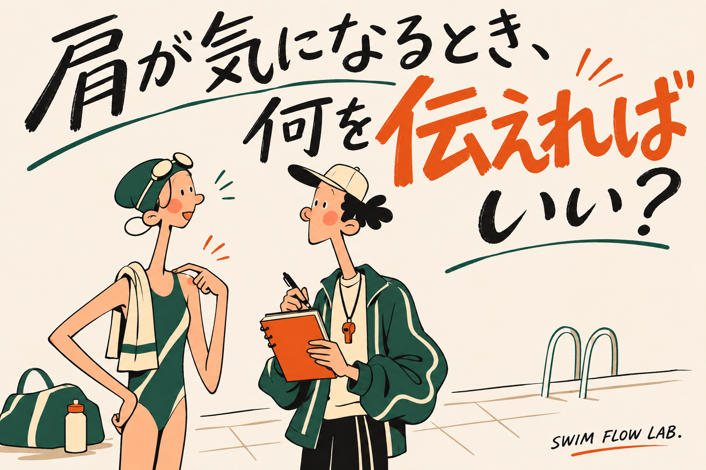

SWIMMING RESEARCH / 29
肩が気になるとき、何を伝えればいい？
痛みの原因を当てる前に、相談できるメモをつくる
2026年11月19日 公開

「肩がちょっと気になる。でも、何て言えばいいのだろう」。泳いでいるときの感覚は、プールから上がるとうまく言葉にできないことがあります。むずかしい身体の名前や、病名を知っている必要はありません。
伝えたいのは、どこが、いつから、どの場面で、どう変わったかです。原因を一人で決めるより、その情報を保護者・指導者や医療者へ渡すほうが、次の相談につながります。今回は、肩の痛みを診断する記事ではなく、自分の感じたことを相手に伝える記事です。
けがの後の強い痛み、腕を動かせないなど、急いで相談したい場合は、受診の目安へ進んでください。メモの完成を待つ必要はありません。
1 「このへん」から話し始めていい
「右の肩の前のあたり」「腕の付け根の外側」。まずは、場所を指したり、簡単な身体の絵に丸をつけたりしてみましょう。肩の中のどの組織かまで、自分で言い当てる必要はありません。
場所は、身体の絵を使って伝えられる
病名を当てるための図ではありません
前側・外側など、感じる場所を示す。
後ろ側なら、背中の側の絵に示す。
身体の前と後ろの位置を伝えるための図。紙の丸は記入例で、病気や損傷を示さない。
図の丸は、相談するときに場所を示す例です。丸の場所に特定の病気がある、という意味ではありません。同じあたりに感じる痛みでも、診察で確かめることは人によって違います。
Cleveland Clinicの患者向け資料でも、「スイマーズショルダー」は似た症状を起こす複数の肩の問題をまとめた呼び名と説明されています。水泳をしていて肩が痛いというだけで、一つの病名に決まるわけではありません。医療機関の解説
子どもが「よく分からない」と答えたら、「前？ 後ろ？」と二つずつ選べる聞き方もできます。これは会話の工夫です。「ここが痛いはず」と大人が答えを誘導したり、痛みが出るまで腕を動かして確認したりする必要はありません。分からないところも、そのまま相談の情報になります。
2 痛みが出た「場面」を、一緒に渡す
次は、いつから気になったかを思い出します。「昨日の練習から」「今日の途中から」「プールを出た後も」。正確な時刻が分からなくても、前後関係が分かるだけで話しやすくなります。
時間の流れに沿って、思い出す
覚えている範囲で大丈夫
- 1泳ぐ前
入水前から気になっていた？
- 2泳いでいる間
どの泳ぎ・動作で気づいた？
- 3泳いだ後
着替えや帰宅後はどうだった？
泳ぐ前・泳いでいる間・泳いだ後に何があったかを思い出す。悪化の順番を表すものではない。
さらに、どの泳ぎや動作のときだったかも添えます。「クロールで腕を前へ戻すとき」「着替えで腕を上げるとき」など、自分に分かる言葉で十分です。動きを再現して見せる場合も、痛みをわざと起こして証明する必要はありません。
HSSの水泳傷害の案内は、痛みの場所、続いている時間、強さを医療者へ伝えることを勧めています。泳いでいる間だけなのか、帰宅後や翌朝にも残るのか。身体の地図に、時間の地図も添えるイメージです。HSSの案内
たとえば「泳ぐ前は気にならず、練習の途中で気づき、着替えでも気になった」という短い文。これは説明のための架空の例です。この経過から病名を決めることはできませんが、ただ「痛い」とだけ伝えるより、相談したい場面を共有できます。
3 泳いだ距離だけで、原因は決まらない
相談するときには、最近の練習も一緒に見返します。急に回数が増えたか、いつもと違う用具や泳ぎを使ったか。記録があれば役立ちますが、「これが原因だ」と先に決めるためではありません。
相談では、複数の情報を一緒に見る
共通：同じ人の、同じ時期の話
距離・時間・回数や、変わった内容。
場所・始まり・動作・その後の変化。
同じ時期の練習記録と身体の変化を併せて相談する。距離だけで原因を決めない。
Feijenらの系統的レビューは、競技泳者の練習量と肩の痛みを扱った12研究、計1460人の情報をまとめました。特に15〜17歳の競技泳者では、練習量と肩の痛みとの関連を示す証拠がありました。一方、「何mまでなら安全」という境目を決めるには、さらに質の高い研究が必要だとしています。レビュー本文
ここでいう「関連」は、練習量の違いと痛みが一緒に見られたという関係です。それだけで「長く泳いだから、あなたの肩が痛くなった」とは決まりません。まとめられた研究では、対象年齢や痛みの数え方も同じではありませんでした。
プールの距離計は、練習の一部分を写すカメラのようなものです。便利ですが、身体の全部は写りません。距離や時間の記録に、症状の場所と経過を重ねて相談する。図の材料は、原因の候補を順位づけするチェック表ではありません。
4 伝えるメモは、短い一文でもいい
相談メモは、長い作文にしなくて大丈夫です。たとえば「昨日から、右肩の前が、クロールで腕を戻すときに気になる。着替えでも気になった」。この架空の例には、場所、始まり、場面、その後が入っています。
見たことと、考えたことを分けて伝える
病名より、自分が経験したこと
- 1感じたことを書く
場所・始まり・場面・その後。
- 2分からないことも残す
不明な日付や距離を、推測で埋めない。
- 3相談して確かめる
症状と練習内容を、相手へ渡す。
場所・始まり・場面・その後を記す。分からない欄は推測で埋めなくてよい。
忘れそうなら、ノートを四つの欄に分けてもよいでしょう。書けない欄は空欄で構いません。始まった日を覚えていなければ「いつからかは分からない」、泳いだ距離が不明なら「記録なし」と書きます。もっともらしい数字を埋める必要はありません。
子どもなら、まず身近な保護者や指導者に知らせましょう。大人が聞くときは「今日、泳げたから大丈夫」と話を終えず、「泳いだ後はどう？」と続けられます。痛みを言うことが、頑張りを否定される場面にならないようにしたいところです。
医療者には症状を、指導者には今の練習内容も伝える。必要なら、受診時に決まった注意点を本人・保護者・指導者で共有します。メモは自分で診断する道具ではなく、相談する相手が変わっても同じ情報を渡せる、小さな橋になります。
このメモは、医療機関が案内する確認事項を参考に、相談しやすい形へ整理した編集上の提案です。診断用の質問票ではありません。
5 メモができるまで、我慢しなくていい
記録は役立ちますが、書き終えることが相談の条件ではありません。痛みがある動作を、原因探しのために繰り返さないでください。泳いでいて気になったら指導者へ知らせ、無理にその動作を続けないことが先です。
記録より先に、知らせてよい
メモの完成を待たない
気になる動作を続けず、身近な大人や指導者へ。
続く痛み、悪化、日常生活への影響。
けがの後の強い痛み、動かせない、変形など。
メモの完成を待たず知らせる。続く痛みや悪化は受診を相談し、けがの後の強い痛み等は急いで相談する。
痛みが続く、強くなる、動かせる範囲が狭くなる、日常生活や眠りに影響する場合は、医療機関へ相談しましょう。HSSは日常生活や睡眠への影響を受診の目安に挙げ、Cleveland Clinicも痛み・腫れ・動かしにくさがあるときの相談を勧めています。HSSの受診案内／Cleveland Clinic
転倒などのけがの後に強い痛みが出た、腕を動かせない、形が変わった、強く腫れたときは、早急に医療機関へ相談する状況です。「泳げるか試す」「腕を引っ張って戻す」といった自己判断は避けます。NHSの緊急相談の目安
相談して休み方や再開の条件が決まったら、その条件を指導者と共有します。大会まで何日あるかだけで再開を決めず、自分に示された方針に沿うことが大切です。この記事の持ち帰りは、痛みを我慢する技術ではありません。「うまく説明できないから」と黙らずに、最初の一言を渡せることです。
研究から分かったこと
- 研究の目的
- 研究は、競技泳者の練習量と肩の痛みにどのような関連があるかを調べました。
- 何を比べたか
- 年齢群や練習量、痛みの有無を扱う12研究を整理しました。
- 何が分かったか
- 思春期の競技泳者では関連を示す証拠がありましたが、誰にでも使える安全な距離は決められませんでした。
- この記事の答え
- 肩の痛みの原因を距離だけで決めず、場所・始まり・場面・変化を伝えることが相談につながります。
肩の原因を自分で突き止めてから、相談する必要はありません。「この辺が、いつから、どんな時に変わったか」。その情報は、正しい病名を当てることとは別の役に立ちます。言い切れない部分を残したままでも、身体の変化は伝えられます。
参考文献と確認範囲
- Feijen S, et al. (2020). Swim-Training Volume and Shoulder Pain Across the Life Span of the Competitive Swimmer: A Systematic Review. J Athl Train 55(1):32–41.
抄録・方法・研究特性表を確認。個人の診断や安全距離の根拠にはしていません。
- Hospital for Special Surgery. Swimming Injuries and Conditions.
痛みの場所・期間・強さの共有について確認。2026年11月13日閲覧。
- Hospital for Special Surgery. Shoulder Pain Causes & Conditions.
日常生活・睡眠への影響がある場合の相談目安を確認。2026年11月13日閲覧。
- Cleveland Clinic. Swimmer’s Shoulder.
2023年12月7日更新。症状の伝え方、受診・再開の案内を確認。
- NHS. Shoulder pain.
けが後・強い痛み・変形などの緊急相談目安を確認。ページ最終レビュー2023年5月22日、2026年11月13日閲覧。